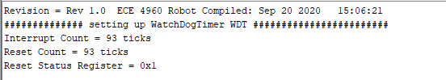

Hi! I'm a junior in ECE and I'm not quite sure what area I'm going to pursue but I have interests in power, optics, and also robotics. I rock climb in my free time (or I did before COVID) and like hiking as well.
Robot
Beep Boop
About
Location
Collegeville, PA (Working from home though the CEI Lab is located at Cornell University, Ithaca NY)
Focus of the Class
Systems level design and implementing dynamic autonomous robots
Goals
Designing a fast autonomous car and exploring dynamic behaviors, acting forces, sensors, and reactive control on an embedded processor
Lab 1
Artemis Setup
The purpose of this lab was to get set up and familiar with the Arduino IDE
and the Artemis board. After this lab, I was able to program your board,
blink the LED, read/write serial messages over USB,
display the output from the onboard temperature sensor,
measure the loudest frequency recorded by the Pulse Density Microphone,
and run the board using a battery instead of my computer.
I was able to successfully connect to the Artemis Nano module and run the Blink Example.
I ran the Example2_Serial script and confirmed that the serial port was working.
I also ran the analogRead example and could read out the voltage and temperature of the module.
The Example1_MicrophoneOutput script allowed me to read the loudest frequency on the serial port. I demonstrated by snapping my fingers (I sadly have the inability to whistle so I did that instead).
Lastly, I modified the microphone script in order to cause the LED to turn on when it recognized a loudest frequency value of above 4000.
Date: September 10, 2020
Lab 2
Bluetooth Communication
Materials/Code Needed
1 x SparkFun RedBoard Artemis Nano
1 x USB A-C cable
1 x Bluetooth adapter
Distribution code
This lab involved testing the low-latency, moderate-throughput wireless communication between the Artemis board and a computer via Bluetooth LE.
The main files to be modified for this lab were ECE_4960_Robot.ino, which was the Arduino sketch to be uploaded, and main.py, which was the Python Bluetooth example.
I first plugged in my Artemis board with my USB-C cable and then set up the USB passthrough to my Ubuntu VM through the VirtualBox Extension Pack and also installed Bleak, a GATT client software capable of connceting to BLE devices.
After setting up the USB passthrough, I was able to download the distribution code and run the ECE_4960_Robot.ino file for with the Arduino IDE and then the main.py to try to discover my robot,
caching the address "66:77:88:23:BB:EF" to Settings["cached"] in settings.py. I noticed sometimes
the Bluetooth will fail to communicate, and in that case, I just turn off and turn back on Bluetooth under "Settings" in my VM, which
usually resolves the issue.
Here's a screenshot of the Serial Monitor of the Arduino side:

In the distribution code, command.h includes a 99-byte structure (cmd_t) with the first byte as the command type, the second as a length, and the rest as data.
Initially, to check my connection with the robot, I had to run await theRobot.ping() in the asynchronous function myRobotTasks()
I was able to successfully discover my robot after configuring the Bluetooth and the received output was a bunch of print-out statements confirming the ping (and pong) as well as the round trip latency.
On average, the round-trip latency looked to be around 0.114 seconds.
Also, as shown in the screenshot and by what I observed by graphing the latencies for 60 pings,
this seemed to be fairly consistent throughout all the pings, with most falling between 0.11 and 0.12 seconds.
This is definitely slower than our baud rate of 115200 symbols/sec.
Requesting a float
To request a float, on the Python script side, I first commented out await theRobot.ping() and instead used await theRobot.sendCommand(Commands.REQ_FlOAT).
In the Arduino sketch, I wrote the code shown below that the script jumps to when it receives the REQ_FLOAT case.
There's a data structure called res_cmd with three fields:
data (the data(float) to send),
command_type (in this case, it's GIVE_FLOAT which the Python side will recognize and then print the float),
and length (which is the length of the data).
I put in the values for the command type and length as described, and then used
memcpy(dest adr, src adr, size of data), a function suggested on Campuswire, to put in a float that starts at res_cmd->data
I was then able to use amdtpsSendData((uint8_t*)res_cmd, 6) to send the float, using 6 for the second field because
it's the size of a float (4 bytes), the length (1 byte), and the command type (1 byte).
Through the simpleHandler on the Python side, I was able to unpack the float I sent.
The main.py program recognized the command_type to be GIVE_FLOAT I sent
from the Arduino side, and unpacked the bytes as a little-endian float, shown below
The value displayed is not quite the value I sent (which was 3.1415), so I guess the accuracy only goes up to whatever
digit you sent.
Testing the Data Rate
Our last subject to cover is finding out what the round-trip latency was by streaming bytes from the Artemis to my computer.
In the main Python script, I found the code in my function myRobotTasks() with
await theRobot.testByteStream(25). Then in the Arduino sketch, I added in code for the case if (bytestream_active).
I sent an example of a 32 bit integer and a 64 bit integer, copying the data for the 64 bit integer to reside in the
address right after the 32 bit integer using memcpy(). In my case, since I wanted to
find the average time between packets sent, I had my 32 bit integer be the number of packets
the Arduino was sending and the 64 bit integer be the time lapsed between transmissions of packets, as shown below.
On the Python side, I first unpacked the byte array into two byte arrays using first, second = unpack("4s8s",data), and then unpacked those again into an integer and a long
respectively. I then printed out the number of packets received, the time in microseconds between packets,
the time in seconds between packets, and the number of packets sent on the Arduino side.
This is shown in the figure.
(# Arduino packets, time in us, time in s, # Python packets)
I will note that one bug I ran into that confused me for a little while was that the amount of packets I counted
that were being sent from the Arduino side were significantly less than the packets being received over
Bluetooth. Obviously, this was very very wrong because packets don't just start multiplying and increasing in quantity
from the receiving side. I realized this was an issue with the threading in the Python script and how all of them
didn't completely end since I was rerunning the program back-to-back too quickly, meaning apparently all the threads didn't close,
and leading to me having about 8 main.py functions running at the same time (which is a bit of a yikes).
Luckily, this was resolved and can apparently be mitigated by just waiting a bit after ending the program instead of running it immediately after.
Here is a histogram of the time between packets in milliseconds when sending a 32 bit and 64 bit integer (14 bytes).
The average time is 10.77 ms with a SD of 0.306 ms.
The average time was also about the same for a different amount of bytes (50 bytes) as shown below, with an average of 10.83 ms.
I attempted this by doing 4 32 bit integers and 4 64 bit integers.
I think the reason they're about the same is because you're still sending 99 bytes.
The big difference I think comes with the packet loss percentage. When sending 14 bytes,
after 2000 packets sent, there were about 1585 received. This is a loss percentage of 20.75%. However,
when I attempted to send 50 bytes, I got a loss percentage of 58.9% which is much higher than I expected.
Therefore, if you wanted to transfer a large set of data this way, you would have to send it in small packets (as opposed to trying to stuff
the 99 byte buffer with as much data as possible). This might take awhile (a second or two), but it would give you more reliable data.
Date: September 19, 2020
Lab 3
Characterizing the car
Characterizing The Car:
The goal of this part of the lab was to document the car in any way that I thought
might be useful later on. Here are some useful measurements/observations:
Dimensions and Basic Stats:
Weight of the car:
Weight of car with yellow battery: 541 g (1.19 lb)
Weight of car with green battery: 523 g (1.15 lb)
Width between axes of left and right wheel: 10.35 cm (4.075 in)
Distance between front axis and back axis (wheelbase): 7.9 cm (3.11 in)
Dimensions of black base of the car: 12 cm x 6.5 cm
Diameter of wheels: 77.5 mm (useful for future labs involving distance traveled)
Width of wheels: 3.5 cm
Time to charge battery: around 4-5 hours (wasn't watching it near the end but that seems like a good estimate)
Battery life of car: 32 minutes not running at full speed the whole time (probably around 20 minutes)
Number of "clicks" when rotating a wheel slowly: 120 (shown in video below)
Testing the Car's Capabilities:
Max Angle of Incline without slipping (not in motion): 21 degrees:
I tested the robot on multiple surfaces:
Hardwood floor: runs very smoothly (ideal conditions)
Grass: runs surprisngly well
Carpet: basically the same as grass (a little bit better)
Driveway: yep checks out
The robot can reliably turn around its own axis most of the time, at both fast and slow speeds.
With the robot spinning around its own axis at full speed,
I was able to record how many rotations the robot could complete in a certain amount of time. After
averaging three trials, I got a max rotational speed of 1.73 rotations/sec, or 10.87 rad/sec. This happened when
the battery was at approximately full capacity.
Distance needed to stop after starting from full speed (averaged from 5 trials): 4.7 feet
Braking distance in slow mode: 5.5 inches
Acceleration:
I attempted to measure how quickly the car could change speeds by placing tape indicators every 10 inches on the floor and seeing how much the
velocity of the car increased from rest. The car is capable of accelerating at a quick pace, and this acceleration seems to remain
relatively similar regardless of the battery charge left on the robot. Note: in the following trials described,
the battery was at around 75% of its full capacity.
After four trials and analyzing each video in slow motion, I roughly estimated that the
robot is capable of reaching 3.8 ft/s after just 0.3 seconds and should reach its max speed within 0.7 seconds after starting from rest.
I wasn't able to get a solid value for the acceleration without any sensors currently on the car.
I was also able to determine the robot is capable of a decently wide set of velocities, measuring the speed using
the method below. I had the robot start earlier than my 10 inch distance markings (so I would start
measuring the velocity after it had finished accelerating). I then watched the video in slow motion to determine the velocity.
The max and minimum speeds the robot can achieve seem to be highly dependent on battery
life. At a low battery level, it is capable of very slow speeds (especially in slow mode). However, at almost full battery
capacity and based on the data, it appears the robot can reach up to 8.33 ft/sec (2.5 m/s)
Manual Control:
There seem to be three different speed options (faster, intermediate, slower). The middle and
faster option are hard to control, especially the faster option. With the max possible speed, I was basically
constantly flipping the robot when I was driving it around.
The robot is very prone to flipping when running
at full speed due to its center of mass being a bit high. I think when we take off the top of the robot, it'll
be able to have more stability due to a lower center of mass.
Starting from about a 5 meter distance at full speed, I could get about 4 inches from the wall without crashing,
though this involved practicing multiple times to make sure I knew when to slow down quickly enough. Based on the braking distance
I measured for when the robot needed to go from full speed to a complete stop, I was able to accurately stop the car by
braking about 5 feet from the wall, as mentioned previously.
Tricks:
I couldn't get the robot to balance on one set of wheels reliably. I wasn't able to
get it into that position at a lower speed, and the quicker speeds were not controllable to
the extent where I could come close to getting the robot to balance itself. Occasionally, if I got the
robot to flip halfway, I could get it to briefly balance on one set of wheels, but it seems to
be a trick that requires more fine tuned feedback control.
I was easily able to get my car to flip (by going forwards and then quickly flipping the joystick backwards)
I could get the robot to perform some decently fine-tuned actions. For example, I was able to do parallel parking
with my robot.
(Yikes, my robot is better at parallel parking than me)
Additionally, my robot generates enough force to break in to a door.
(Breaking and Entering)
Running the Virtual Robot
I installed the software dependencies and setup the base code in my VM.
I then was able to run lab3-manager, pressing a and s
to start the simulator, allowing me to run tests on my robot.
Additionally, I ran robot-keyboard-teleop to control the virtual robot through
keyboard commands.
The robot can go to very low linear and angular speeds (to where it's basically not moving),
as well as very high linear and angular speeds (as shown below). This is due to the robot being
a simulation, meaning it can change it's angular and linear speed/direction practically instantaneous, currently
without the factors of friction, skidding, etc.
Robot moving in the simulation (Gotta go fast)
From my few tests on the virtual robot, I could see that when the robot bumps into an obstacle,
a warning sign will pop up and the simulation will pause,
meaning you then have to manually drag your robot back to
a non-obstacle occupied place.
Date: September 23, 2020
Lab 4
Motor driver & open loop control
The purpose of the lab was to change from manual to open loop control of the car. At the end of the lab,
my car was able to execute a pre-programmed series of moves using the Artemis board and the motor driver over I2C.
Parts Required:
1 x SparkFun RedBoard Artemis Nano
1 x USB A-to-C cable
1 x Li-Ion 3.7V 400 or 500mAh battery
1 x Sparkfun Qwiic motor driver
1 x R/C stunt car and NiCad battery
1 x Qwiic connector
1 x Small screwdriver (Phillips or flathead)
1 x Wirecutter (you can also make do with a scissor)
Lab 4a:
I first hooked up the Artemis and the motor driver using a Qwiic connector. I then ran Example_wire
and found the I2C address to be 0x5D (93).
I then took the car apart, unscrewing and removing the shell/bumpers from the car. I also removed
the battery and took out the control PCB, cutting its power lines. I hooked up the power wires to the SCMD instead
noting where the VIN on the SCMD marks the location of the positive terminal.
After that, I cut the connector headers from the motor wires and instead hooked them up to the terminals on the board instead. I mounted the
SCMD in the place of the original control PCB and then used the Qwiic connector to hook
up the Artemis board with the motor driver. Note: since the Qwiic connector was too big to route through the hole in the chassis,
I just drilled a bigger hole there so I could feed the wires through.
Additionally, I added a red jumper between the PSWC pins on the Artemis board so
I could easily switch on and off the board (meaning I didn't have to yank out the battery connector everytime)
Using the Arduino library manager, I installed the SCMD (Serial Controlled Motor Driver) library. I was then able to make the robot
follow a straight line, noticing that the right motor is stronger than the other. Therefore, for the left motor to go forwards
(motorNum = 0 and direction = 1), I had to
compensate for the imbalance with myMotorDriver.setDrive(0, 1, 118) to drive the left motor. For the right motor to go forwards
(motorNum = 1, direction = 1),
I did myMotorDriver.setDrive(1, 1, 100).
I then tested the lower limit for which each motor still turns.
For the left motor, this seemed to be around myMotorDriver.setDrive(0, 1, 68), while for the right motor
it seemed to be around myMotorDriver.setDrive(1, 1, 50)
Technically, the motors are
able to start at lower values, but I have to give the wheels a little help (a nudge to start) so I only counted
the threshold where the wheels could fully turn without any assistance at the beginning from me. Additionally, I only
counted the threshold where the car could actually move forwards. The wheels could spin at a lower threshold with the car on its back
but I thought this wouldn't be as important since the robot couldn't actually go forwards with the inhibitions of friction and the weight
of the car.
Lastly, I just used open loop control of the robot to drive it around and make it spin around its own axis.
Lab 4b: Open Loop Control
Setting up the Base Code and Starting the Simulator
I setup the base code by extracting the lab 4 base code in VM and typing ./setup.sh in my terminal,
successfully compiling the lab
To start the lab4-manager, I opened a terminal window and typed in lab4-manager
I then launched the simulator by pressing "a" and then "s" on my keyboard.
Jupyter Lab Code
We were introduced to Jupyter Lab to write our Python code. To start a Jupyter server, I did the following:
Opened a terminal and cd into /home/artemis/catkin_ws/src/lab4/scripts.
Started a jupyter server using jupyter lab
Opened "lab4.ipynb"
I was then able to work with the Robot Class which provides a control interface for the robot in
the simulator and performs the following operations: getting the robot odometry pose, moving the robot, and getting
range finder data.
In order to have my robot move in a rectangular loop, I first imported the necessary modules for
my Python script and then instantiated/initialized an object of class Robot. I then set the linear velocity to a value and the angular velocity
to 0, let this run for a length of time, and then set the linear velocity to 0 and the angular velocity to a value, letting this run for a length of time.
By tuning my values, I could make the angles 90 degrees and modify the size of my rectangle by changing the amount of time I let the robot run with a
non-zero linear velocity.
To set the lengths of time, I used the time.sleep() function and to make 90 degree turns, I had the angular velocity be set to 2 for 1 second.
My code and demonstration are shown below:
Date: September 29, 2020
Lab 5
Prox, TOF, Obstacle avoidance
The purpose of the lab was to enable the robot to perform obstacle avoidance by putting distance sensors
on the car, getting them working, and then attempting fast motion around the room without crashing into obstacles.
Parts Required:
1 x SparkFun RedBoard Artemis Nano
1 x USB A-to-C cable
1 x 4m ToF sensor
1 x 20cm proximity sensor
1 x Li-Ion 3.7V 400 or 500mAh battery
1 x Sparkfun Qwiic motor driver
1 x R/C stunt car and NiCad battery
1 x Qwiic connector
1 x Gray target
1 x Ruler or graph paper
1 x Double sided tape
1 x Small screwdriver
1 x Wirecutter
Lab 5a: Obstacle Avoidance
Prelab:
I read over the datasheet and manual for the proximity board and found the device address to be 0x60.
I also read over the documentation for the ToF breakout baord, which has an I2C address of 0x52.
The Proximity Sensor Breakout can read from 0 cm (the face of the sensor) to about 20 cm away. However,
it doesn't have a wide angular range. It's also not very
accurate for detecting quantitative distance readings but it is good at seeing if objects appear in front of it. I think ideally we would
walk to put it on the front of the car to ensure we are not bumping into objects in front of the robot, but they'll be scenarios where the robot will bump into
things on the side since it basically lacks peripheral vision or sensors. Additionally, just having that one sensor in the front would obviously mean the robot would
not be able to see behind itself and would therefore run into any items behind it. Also, since the range is only 20 mm, there might be situations where the robot is close to an object but does not detect
it due to inaccuracies in the sensor or being just over 20 mm away, meaning the robot would not be able to react/stop in time.
The ToF breakout board has a FoV from 15-27 degrees so it's basically just for looking straight forwards as well. It has a max distance of either
136, 290, or 360 cm in the dark but this distance is less in ambient light (where it's more sensitive).
It will also have the same narrow FoV problems as the proximity sensor. However, it is much better at
quantitative measurement as opposed to the proximity sensor, and is less sensitive to color and texture. Putting it in the front of the car is the best approach
since the car is primarily driving forwards and then turning when it sees obstacles. The car would miss seeing obstacles similar to the proximity sensor,
due to the sensor's position in the front, but it would have less problems with range since the range is 1.3m as opposed to 20 mm.
There are a multitude of distance sensors based on IR transmission.
Amplitude based IR sensors do not work
in high ambient light and depend on a target's reflectivity. However, they are usually cheap, small, and lightweight, and can be used
for sensor fusion with other more reliable sensors.
IR triangulation sensors are insensitive to surface color, texture, and ambient light but also do not work in
high ambient light and have a low sample rate.
Lastly, there are ToF sensors (which we are using as well) which are a bit more
expensive than amplitude-based IR sensors though cheaper than triangulation sensors.
They are insensitive to surface color, texture, and ambient light. We will be using this sensor
primarily for obstacle avoidance due to its better accuracy, range, and decreased light noise sensitivity than other sensors, with the
proximity sensor as a backup/offering supporting data for sensor fusion.
Proximity Sensor
Using the Arduino library manager, I installed the SparkFun VCNL4040 Proximity Sensor Library and hooked up the sensor. I scanned the I2C channel to find the sensor at 0x60, which matches with the datasheet.
I could then test the sensor using the Example4_AllReadings script.
Here is a graph of the proximity value readings vs distance for 3 different colored objects in a well lit room.
One object was a square white box, another was a pack of yellow sticky notes,
and the last was my black notebook. I was able to see that the different colors did indeed impact the
proximity value. The darker the color, the lower the value. This is because the IR is likely being absorbed more by darker materials as opposed to being
reflected as for light materials, meaning the reading is lower.
All of them show a drastically higher level at a closer distance as opposed to a distance further away. I think this indicates that the proximity sensor
is best used for objects/obstacles that emerge very close to the robot, as it has a higher sensitivity to that range. This is further emphasized by how
I graphed them using a log scale.
I then tested the white box in a different ambient light environment (I turned the lights off and test it in the dark). The values were very close
and basically indistinguishable from one another meaning ambient light levels shouldn't have a major impact on the proximity value.
I also tested different types of textures. When I tested a black matte surface vs a black reflective surface, I saw higher values for the reflective surface because
similar to the white and yellow objects previously, some of the reflective surface reflected more of the IR rays as opposed to the phone case where the light
was mostly absorbed. This is a downside to the proximity sensor as it depends on the target's reflectivity.
Lastly, I looked at the ambient light and white level data. The ambient light was lower the closer the object was to the sensor, as when it was closer it blocked
more of the ambient light to hit the sensor. Additionally, the black object had the lowest ambient light and white levels due to the same reasons stated previously.
I am also assuming the shadows that resulted from when the object was very close to the proximity sensor resulted in the lower white levels for the smaller distances.
I can therefore conclude that the sensor is sensitive to ambient light, though the proximity values seem to not be affected by this ambient light.
It takes about 630 us each for each of the getWhite(), getAmbient(), and getProximity() functions, which is
a fairly high rate. I found it as follows:
unsigned long time0 = micros();
unsigned int proxValue = proximitySensor.getProximity();
unsigned long measTime = micros() - time0;
Serial.println(measTime);
However, I noticed that it takes about 4 seconds for the
data to stabilize after a sudden change. The sensor readings can be a bit jumpy, so it's definitely better for qualitative as opposed to quantitative
measurements.
Time of Flight Sensor
Using the Arduino library manager, I installed the SparkFun VL53L1X 4m laser distance sensor library, hooking up the sensor to the
Artemis board using a QWIIC connector. I scanned the I2C channel to find the sensor at 0x60, which matches with the datasheet.
I could then test the sensor using the Example1_ReadDistance script, after first running the Calibration
script with the gray target we were given with our kit. This calibration code didn't work as expected(?), so I added in startRanging and stopRanging() which
then allowed me to run the code correctly.
The timing budget has a min and max of 20ms and 1000ms respectively. If
we wanted to collect the most amount of data and run the robot in Short Distance mode, we would want to set the timing budget to be 20 ms.
This also takes into account power consumption, and how we don't always want the sensor to constantly be collecting data. The repeatibility error
is higher at lower timing budgets do I set the timing budget to be a little higher than 20 ms, as 30 ms.
We also consider the max speed we know the robot can go at in order to determine
the measurement period (the time between when measurements start and end, when the sensor is in low power mode). The robot has a max speed of around 8 ft/s
and I think the next part of the lab involves us trying to make it go as fast as possible.
I guess to ensure the robot won't collide with the wall or any objects when traveling quickly, I'm estimating that we want to
at least check the robot's position every 4 inches. Doing t = d/v, I then got a value of around 37.5 ms.
Because of this, I know that the measurement period should be around 37.5 - 30 (assuming the timing budget is 30 ms). I then set my value to 5, knowing that any value
below 30 would mean the robot would immediately start ranging again after it completed.
I set these values using:
distanceSensor.setTimingBudgetInMs(30);
distanceSensor.setIntermeasurementPeriod(5);
To optimize the ranging performance, I decided to use the short distance mode since the room I'm running the robot in is not the
largest. Additionally, the range in short distance mode is about 1.3 meters (4.25 feet) which seems to be an adequate distance to start stopping a robot
going at 8 ft/s, knowing that the coasting distance (from Lab 3) was around 5 feet, and that I can cut this distance down by implementing
reverse motor controls (though not too much because then the car will flip). I set this mode using distanceSensor.setDistanceModeShort();.
It appears the most common errors are
a signal fail or a wrapped target fail, which seem to be due to shaking or sudden movements that the sensor sees. Since it is sensitive to these sudden
movements, I can use these failure mode indications to ignore the readings that result during those errors.
Lastly, I documented the ToF sensor range and accuracy. I had my test setup as shown below, running the sensor in Short Mode since that's
the mode I'm using for obstacle avoidance:
My data is as shown below:
I can conclude that the sensor has good repeatability as I ran it three times on 3 different days at roughly the same ambient light (running
in the same room with the same lights on), resulting in basically identical graphs. I did 100 measurements at each distance point (which was every
100 mm) and found the mean and SD at each. The ToF SD's were minimal and the ToF means were extremely close to the actual distance all the way up to around 1250 mm,
before the mean started deviating from the actual distance (increasing at a slower rate than it's original linear pace) and the SD drastically increased as well.
I can then conclude that the sensor is extremely accurate within at least a 1250 mm range.
I also tested in a pitch black room as opposed to my normal well lit room as shown in the graph, and I could see that the results were a little bit closer
to the actual distances for the distances further away than 1250 mm. I think this is due to the sensor being in Short Distance mode as well
as ambient light starting to interfere at further distances in lighter conditions, and not so much in dark conditions where it has slighter
better performance. I also tested with different colors and textures with the results being virtually identical (as opposed to the proximity sensor),
meaning this sensor is more insensitive to those aspects of objects.
In terms of the timing measurements, which I measured using the micros() function to time certain functions:
Just reading = 725 us
ToF ranging (with StopRanging) = 2.87 ms
ToF ranging (no StopRanging) = 2.42 ms
Obstacle Avoidance
I first mounted the sensors, Li-Ion battery, and Artemis board firmly to the car using the double-side tape from
my kit and a bit of cardboard for the proximity and ToF sensors at the front. I daisy-chained all the sensors, the motor
driver, and the Artemis board using QWIIC connectors, and I also made a cardboard bumper so I would have a smooth surface to mount
the sensors on, angled slightly upwards to it wouldn't accidentally detect the floor.
I incrementally tested the vehicle, starting out with a speed of around 80 on both motors. I could then figure out the approximate distance needed
as the threshold for the car to stop and turn, which I found to be about 500 mm. I basically kept increasingly bringing up the
linear speed, while also changing the values of time and speed that I spent either braking, coast, or turning to compensate for the increase in speed
before I reached a point where the robot was bumping into objects more. Also, I was able to use the rangeStatus function to check if a sensor
measurement was valid though I did not end up using the proximity sensor. When I added it into my program, it didn't seem to add any less collisions
and in fact almost seemed to make the performance worse since it appears to be less accurate and reliable. Therefore, my code just involves fine-tuning
the ToF sensor.
My robot travels forward basically whenever the distance measurement is greater than the threshold, varies from 500 to 800 depending on if
the robot just turned or whether it had first sensed an obstacle since this strategy led to better performance by minimizing the robot not turning
enough and colliding straight into an object. If it sees an obstacle, it brakes, coasts, and then turns.
Through this process, I ended up with the following code:
#include "ComponentObject.h"
#include "RangeSensor.h"
#include "SparkFun_VL53L1X.h"
#include "vl53l1x_class.h"
#include "vl53l1_error_codes."
#include "Wire.h"
#include "Arduino.h"
#include "stdint.h"
#include "SCMD.h"
#include "SCMD_config.h" //Contains #defines for common SCMD register names and values
#include "SparkFun_VCNL4040_Arduino_Library.h"
//Optional interrupt and shutdown pins.
#define SHUTDOWN_PIN 2
#define INTERRUPT_PIN 3
#define LEDPIN 13
SFEVL53L1X distanceSensor;
SCMD myMotorDriver;
#define left 0
#define right 1
void setup(void)
{
Serial.begin(115200);
Wire.begin();
pinMode(LEDPIN, OUTPUT);
//************************************************************************
//Connect to all sensors and motor driver
if (distanceSensor.begin() != 0) //Begin returns 0 on a good init
{
Serial.println("Sensor failed to begin. Please check wiring. Freezing...");
while (1);
}
// Serial.println("Sensor online!");
myMotorDriver.settings.commInterface = I2C_MODE;
myMotorDriver.settings.I2CAddress = 0x5D; //config pattern is "1000" (default) on board for address 0x5D
myMotorDriver.settings.chipSelectPin = 10;
//*****initialize the driver get wait for idle*****//
while ( myMotorDriver.begin() != 0xA9 ) //Wait until a valid ID word is returned
{
Serial.println( "ID mismatch, trying again" );
delay(500);
}
Serial.println( "ID matches 0xA9" );
// Check to make sure the driver is done looking for slaves before beginning
Serial.print("Waiting for enumeration...");
while ( myMotorDriver.ready() == false );
while ( myMotorDriver.busy() ); //Waits until the SCMD is available.
myMotorDriver.enable();
//****************************************************************************
// Distance sensor
distanceSensor.setDistanceModeShort();
distanceSensor.setTimingBudgetInMs(30);
distanceSensor.setIntermeasurementPeriod(5);
}
int threshold = 500;
void loop(void)
{
distanceSensor.startRanging();
while (!distanceSensor.checkForDataReady()) {delay(1);}
int distance = distanceSensor.getDistance() + 21; //Get the result of the measurement from the sensor + offset
byte rangeStatus = distanceSensor.getRangeStatus();
if(rangeStatus==0){ // if no sensor errors occur (sigma, signal, etc)
if(distance = 0 || distance>threshold) { // onwards
myMotorDriver.setDrive(left, 1, 160);
myMotorDriver.setDrive(right, 1, 148);
delay(10);
threshold = 500;
}
else {
digitalWrite( LEDPIN, 1 );
myMotorDriver.setDrive(left, 0, 250); //brake
myMotorDriver.setDrive(right, 0, 250);
delay(100);
myMotorDriver.setDrive(left, 0, 0); //coast
myMotorDriver.setDrive(right, 0, 0);
delay(50);
myMotorDriver.setDrive(left, 1, 150); //turn
myMotorDriver.setDrive(right, 0, 150);
delay(40);
threshold = 800;
}
}
}
I was able to make the robot follow a straight line as well and stop before hitting the wall. I could do this reliably at a speed of around 4.1 ft/s, found since the
green line is 6ft and each run took about 1.57 s.
Above that speed, I was able to get the car to follow the straight line and stop, but it was not so great in terms of avoiding obstacles in general.
I created functions for going forwards, turning, going backwards, etc. and also tuned the distances and times based on the speed the robot was going at.
This way, braking in time was more optimized and while it may take a little time to turn, I think the accuracy is a big improvement from before.
#include
#include
#include "SCMD.h"
#include "SCMD_config.h" //Contains #defines for common SCMD register names and values
#include "Wire.h"
#include
#include
#include
#include
#include
#include
#include "SparkFun_VL53L1X.h" //Click here to get the library: http://librarymanager/All#SparkFun_VL53L1X
//Optional interrupt and shutdown pins.
#define SHUTDOWN_PIN 2
#define INTERRUPT_PIN 3
#define LEDPIN 13
const float _adjustPercent= 1.0630;
const int _pwrLevel = 255;
const int _minObjDistance = 400;
const int _forwardCounterRatio = 6;
const int _turnTime = 1;
const int _coastingTime = 50;
const int _backwardTime = 50;
SFEVL53L1X distanceSensor;
SCMD myMotorDriver; //This creates the main object of one motor driver and connected slaves.
void setup()
{
Wire.begin();
Serial.begin(115200);
Serial.println("VL53L1X Qwiic Test");
if (distanceSensor.begin() != 0) //Begin returns 0 on a good init
{
Serial.println("Sensor failed to begin. Please check wiring. Freezing...");
while (1)
;
}
Serial.println("Sensor online!");
pinMode(LEDPIN, OUTPUT);
Serial.println("Starting sketch.");
//***** Configure the Motor Driver's Settings *****//
// .commInter face can be I2C_MODE or SPI_MODE
myMotorDriver.settings.commInterface = I2C_MODE;
//myMotorDriver.settings.commInterface = SPI_MODE;
// set address if I2C configuration selected with the config jumpers
myMotorDriver.settings.I2CAddress = 0x5D; //config pattern "0101" on board for address 0x5A
// set chip select if SPI selected with the config jumpers
myMotorDriver.settings.chipSelectPin = 10;
//*****initialize the driver get wait for idle*****//
while ( myMotorDriver.begin() != 0xA9 ) //Wait until a valid ID word is returned
{
Serial.println( "ID mismatch, trying again" );
delay(500);
}
Serial.println( "ID matches 0xA9" );
// Check to make sure the driver is done looking for slaves before beginning
Serial.print("Waiting for enumeration...");
while ( myMotorDriver.ready() == false );
Serial.println("Done.");
Serial.println();
//*****Set application settings and enable driver*****//
while ( myMotorDriver.busy() );
myMotorDriver.enable();
Serial.println();
distanceSensor.setDistanceModeShort();
distanceSensor.setTimingBudgetInMs(20);
distanceSensor.setIntermeasurementPeriod(20);
}
void loop()
{
static bool back;
static long fowardCounter;
float speedAdjuster = fowardCounter/_forwardCounterRatio;
if (speedAdjuster > 8 ) speedAdjuster = 8;
if (getDistance()> (_minObjDistance + speedAdjuster * 100) ){
back=false;
motorForward();
fowardCounter++;
}
else {
digitalWrite( LEDPIN, 1 );
if (!back){
motorCoasting(_coastingTime );
motorBackward(_backwardTime + speedAdjuster * 25 );
motorPivotRight(_turnTime);
back=true;
fowardCounter = 0;
}
// motorStop();
}
}
int getDistance(){
distanceSensor.startRanging(); //Write configuration bytes to initiate measurement
while (!distanceSensor.checkForDataReady())
{
delay(1);
}
int distance = distanceSensor.getDistance(); //Get the result of the measurement from the sensor
distanceSensor.clearInterrupt();
distanceSensor.stopRanging();
return distance;
}
void motorForward(){
myMotorDriver.setDrive( 0, 1, _pwrLevel); //Drive motor i forward at full speed
myMotorDriver.setDrive( 1, 1, _pwrLevel*_adjustPercent);
delay(10);
}
void motorCoasting(int time){
myMotorDriver.setDrive( 0, 0, 0);
myMotorDriver.setDrive( 1, 0, 0);
delay(time);
}
void motorBackward(int time){
myMotorDriver.setDrive( 0, 0, _pwrLevel);
myMotorDriver.setDrive( 1, 0, _pwrLevel*_adjustPercent);
delay(time);
}
void motorPivotRight(int time){
myMotorDriver.setDrive( 0, 1, _pwrLevel*0.7); //Drive motor i forward at full speed
myMotorDriver.setDrive( 1, 0, _pwrLevel*_adjustPercent*0.7);
delay(time);
}
void motorPivotLeft(int time){
myMotorDriver.setDrive( 0, 0, _pwrLevel*0.7); //Drive motor i forward at full speed
myMotorDriver.setDrive( 1, 1, _pwrLevel*_adjustPercent*0.7);
delay(time);
}
void motorStop(){
myMotorDriver.setDrive( 0, 1, 0);
myMotorDriver.setDrive( 1, 1, 0);
delay(10);
}
Lab 5b: Obstacle Avoidance on My Virtual Robot
I downloaded and setup the lab5 base code in my VM like I had previously done in Lab 4. I then
started the simulator from the lab5-manager using lab5-manager, before I changed the directory to the lab5
work folder and started the Jupyter server in my VM (in the same way as Lab 4). I then opened the lab5.ipynb notebook to start the lab.
To do object avoidance for the virtual robot, I used data from the robot's range finder. In an infinite while loop, I first started off by having the
robot turn whenever it saw a wall through a condition in a while loop. Basically, if the robot saw a distance less than or equal to 0.5,
I made the robot stop and turn
around its axis at a speed of 1 for 0.25 seconds. Else I set the velocity to 1 and kept the robot going forwards for 0.1 seconds.
After trying this out, I saw that I could fine tune this to let the robot be able to get closer to the wall without crashing.
This just required some trial and error since the robot sometimes wasn't moving at a perfect perpendicular angle to a wall, meaning that
since the laser distance finder on the virtual robot seemed to primarily point straight in front of it, I couldn't make the value too small
or else the robot might sometimes not see the wall and crash. I had robot move at 90 degree angles to be less likely to approach a wall at a random
angle and collide with it, especially when the robot is driving almost parallel to a wall. I also settled on alternating the angle so the robot
could take a more random path (it kept going in a rectangle if I just had it be the same angle).
I played around with the durations for the times the robot went forwards or turned using the time.sleep() command
which maintains the velocity designated before for the amount of seconds specified in the parameter to the sleep function. I made the robot turn about
90 degrees using the set_vel() function and also experimented
with the linear speeds of the virtual robot in terms of trying to minimize collisions. You can make the robot go faster but then you have to
make the distance in the while-statement a little larger to compensate for this. I settled on a linear speed of 0.7, and a distance threshold of 0.3,
also making the robot back up a little before it turns.
There are situations after time where the robot will deviate from its 90 degree angles and increasingly become offset from the maze's grid,
becoming more likely to run into obstacles since it starts to bounce into the wall at more random angles.
Date: 10/10/20
Lab 6
IMU
The purpose of the lab was to setup the IMU, mount it on the robot, and attempt to do PID control on the rotational speed.
Parts Required:
1 x SparkFun RedBoard Artemis Nano
1 x USB A-to-C cable
1 x Li-Ion 3.7V 400 or 500mAh battery
1 x Sparkfun Qwiic motor driver
1 x R/C stunt car and NiCad battery
1 x Qwiic connector
1 x IMU
1 x ToF sensor
Lab 6a: IMU, PID, and Odometry
Prelab:
I installed SerialPlot to help visualize the data and read through the IMU Sparkfun documentation and datasheet. I also
installed the PID Arduino library.
Setting up the IMU
I confirmed that the SparkFun 9DOF IMU Breakout-ICM 20948 Arduino library was installed and connected the IMU to the Artemis board using
a QWIIC connector. After scanning the I2C channel, I found the sensor at address 0x69 which matches the datasheet. I ran the
"\Examples\SparkFun 9DOF IMU Breakout-ICM 20948 Arduino library\Arduino\Example1_Basics" script and observed how the accelerometer had data
for the x, y, and z orientations. The accelerometer z-axis measurement was always around 960 cm/s^2 due to gravity, as shown below when the IMU is at rest.
When I accelerated in a direction indicated in silkscreen on the IMU, there was an increase in value for
the accelerometer measurement in that direction. Likewise, I saw that when I rotating around either the x, y, and z axes, there was a
corresponding spike in gyroscope value for those relative axes as it measures the rate of angular change, before it stabilized back to 0.
Accelerometer
I first taped the accelerometer to a box so I could easily rotate/move it accurately:
Using the average from 200 measurements each, I found the output at {-90,0,90} degrees pitch and roll:
Pitch (-90 degrees) = -92.55
Pitch (0 degrees) = -0.58
Pitch (90 degrees) = 92.09
Roll (-90 degrees) = -91.58
Roll (0 degrees) = 0.70
Roll (90 degrees) = 91.86
I also recorded the output on the Plotter for those angles in terms of pitch and then in terms of roll.
The accelerometer is pretty accurate once you filter the output or have the IMU at rest (since it's fairly noisy). The angles of pitch and roll using
the data from the accelerometer were very close to the actual values, with the angles changing from 0-90 or -90-0 at a conversion factor slightly above 1 (around
1.025 for both pitch and roll). I notice a little bit of instability when the roll is exactly -90 or 90 degrees (the tan calculation jumps around
due to noise).
I wrote Python code using the tutorial on the lab page to plot the frequency response by doing a Fourier Transform. I received the data below for the
frequency domain and I was a bit surprised to find that it is incredibly noisy. I had difficulty figuring out a cutoff frequency for my low pass filter
based on this data and estimated that is was around 200 Hz. Knowing that the alpha value for the low pass filter was T/(T+RC) and that RC was around 33.3 and T was around 200 Hz,
I then used trial and error to figure out the correct alpha value to be around 0.2. I noticed that the lower the value, the smoother the signal looked
but the measurement did seem to lag a little bit more.
The gyroscope pitch/roll calculation is to accumulate the integral of angular acceleration over time to estimate the angle, which tends
to drift away over time as shown below. The rolling angle from the accelerometer and gyroscope are about the same at the beginning, but start to drift away from each other over
time. It looks like the drifting is worse in high sampling rates as opposed to lower sampling rates, with the drift becoming evident faster. Other than the drift though, the data looks quite
accurate and responds faster than the accelerometer due to the filtering there.
I then filtered out the noise like with the accelerometer and got:
See the diagram below (green - complementary filter, red - gyroscope, blue - accelerometer).
It uses the short term gyroscope data, and compliments it with the long term accelerometer to prevent drift.
Here is the position of the IMU with a phone compass as a reference.
The compensated values (red) are more stable than the uncompensated values (blue) to small changes in pitch, as shown below
PID Control
1. Ramp up and Down Function
I first changed the IMU settings to have the maximum gyroscope resolution be 1000 dps instead of the default value of 250 dps.
ICM_20948_fss_t myFSS; // This uses a "Full Scale Settings" structure that can contain values for all configurable sensors
myFSS.g = dps1000; // (ICM_20948_GYRO_CONFIG_1_FS_SEL_e)
myICM.setFullScale( (ICM_20948_Internal_Gyr), myFSS );
if( myICM.status != ICM_20948_Stat_Ok){
Serial.print(F("setFullScale returned: "));
Serial.println(myICM.statusString());
}
I then set the motors to run in opposite directions and slowly increase the motor speed and then decrease it over 25 seconds.
I graphed the motor speed vs. gyroscope reading using SerialPlot.
Here are the measurements and characteristics of the vehicle:
Max rotation speed = 998 dps
Deadband for increasing motor speeds:
111 for drive 0
145 for drive 1
Deadband for decreasing motor speeds
103 for drive 0
135 for drive 1
The left motor has a lower deadband and always spins first.
The red data is the motor output and the purple is for the gyroscope output:
2. Lowest possible speed at which you can turn:
I found the lowest speed to be around a motor power of 170, with a gyroscope average of around 280 degrees/sec.
Below 180, I got this graph for a motor power of 170 (with a single wheel turning and a gyroZ average of around 110):
Additonally, I tested the limit where both wheels stopped turning. This seemed to be around a motor power of 160 as shown below:
3. Accuracy of TOF ranging
We can achieve a stable rotation speed of 170 dps for the vehicle. The lowest sampling rate for the TOF sensor in short range
mode is 20 ms. This means that the vehicle can rotate 3.6 degrees in one TOF measurement. At a 0.5m vertical distance from the wall,
the distance will change from 50cm to 50cm/cos(3.6) = 50.1 cm in 1 TOF measurement.
At 0.5m starting from a 45 degree angle from the wall, the distance will change from 50cm to 50cm/sin(48.6) - 50cm/sin(45) = 2.1cm. I think given
the two parameters signal and sigma, we might get a reliable rotational scan but ideally we would probably want the robot to travel a factor or two slower
to achieve a more reilable rotational scan.
4. PID Control
I originally decided to go with PID control since I knew using only P control would lead to a steady-state error because that type
of controller requires an error input to function. However, after trying to tune the values with PID, I saw that the rate of change of the error
didn't seem to help with controlling the robot since the change in error rate didn't seem too significant. In fact, adding in the differential coefficient
led to oscillations in the output and made the controller a lot more difficult to tune due to the noise of the sensor (since derivatives amplify HF signals
more than LF signals). Additionally, when I added in
Kd, I saw motor clamping that was hard to eliminate. Because of this, I went with
PI control since it provides zero control error and seems to reach a more stable state.
I also have to note that a crappy USB-C cable is better suited for this lab since it has a thinner/softer cable that drags less when the vehicle
is rotating with the cable connected.
I first wrote my functions for using PID control, so I could then focus the rest of my time on tuning the values.
To tune the PI controller, I leaned towards Heuristic Procedure 1 in the lecture notes. I set Kp to a small value,
with KI as 0 at first. I then increased KP until I got overshoot or any oscillations, before decreasing it. This step took a decent
amount of time to eliminate any oscillation, but after that I could move on to the integral coefficient. I slowly increased this from 0 until I saw overshoot, and then
continued to run the robot until I had eliminated oscillations.
In particular, I first started with a gyroZ target of 200 dps and a Kp of 5, which was clearly too high:
I then proceeded to scale down Kp to 1 with a static error of around 50.
I lowered Kp to 0.5 and Ki to 0.1 which led to a very unstable system.
Knowing Ki was too high, I spent a lot of time trying to tune the parameters and I ended up with a gyroZ value of 170, Kp = 0.935 and Ki = 0.00255.
As shown, this system looks stable.
I also have a motor power range limiter in runPIDLoop() since the motor is a nonlinear actuator with a limited power range, and we
have to implement integral clamping to avoid an integral wind-up issue. This resulted in me putting clamps on anything below a
motor power level of 80 or anything above a motor level of 255.
As shown, the robot can clearly reach lower speeds using PID control as compared to open loop control. I went from an open loop speed
of 280 dps to a speed of around 170 dps, which is significantly lower. It is about slow enough to produce a rough rotational scan, though
I think this scan might not be the most reliable given that this is still around half a full rotation in one second.
5. One Motor Only
I then used PID control on one motor only to see how slow I could make the robot spin. You can achieve much lower
speeds now since, intuitively, you are only driving one motor as opposed to driving two in opposing directions (leading to more speed). It becomes
easier to have the robot basically rotate around one of its wheels rather than around its center.
I found that a speed of 80 dps was the lowest gyroscope set point I could set. To prevent drifting from having the motor be set to 0,
I set the right motor to a low value of 50 to let the motor aid the other one just enough to allow the robot to spin around a single wheel.
In terms of accuracy, at a speed of 80 dps and a ToF sampling rate of 40 ms, we get that the vehicle can rotate 3.2 degrees in one TOF measurement.
If you were mapping a 2x2 m^2 box you would get a change from 200 cm to 200cm/cos(3.2) = 200.3 cm, which is very accurate.
If you were trying to map a 4x4m^2 box, you would want to set the TOF to long distance mode as opposed to short mode, with a sampling time of around 100 ms.
This would give you an accuracy of 8 degrees per measurement, meaning the distance will change from 400 cm to 404 cm, which is still faily accurate. There might
be a bit of noise or inaccuracies in terms of the turning of the robot, so this may not actually end up this accurate, but plotting the TOF sensor readings
should lead to a pretty reasonably accurate mapping of a room.
I didn't have enough time to plot by TOF sensor readings in a polar plot or implement PID control on my robot's forward velocity since this lab
really took quite a lot of time to complete, but I guess I'll get to work with this in the future labs.
Lab 6b: Odometry - Virtual Robot
The purpose of this lab is to use the plotter tool and visualize the difference between the odometry (estimated use of data
to estimate change in position) and ground
truth pose (the actual position) estimates of the virtual robot.
I downloaded the lab6 based code and setup everything as before. I was also able to start the Plotter by starting the lab6-manager
and pressing "b" and "s" as well as start the Simulator and keyboard teleop tool. I then started the Jupyter server in my work directory.
I plotted the odometry and ground truth data points using the Plotter tool and controlling the robot through the keyboard teleop tool.
I found that it seemed reasonable to send data every 0.1 seconds and saw that the odometry and ground truth data points got further and
further away as time went on due to error accumulation.
In particular, if I had the virtual robot remain stationary for a period of time and then started moving it around, the ground truth
plot would start from the origin while the odometry graph would already have been accumulating distance in that time, leading to it starting at a different
point and the whole plot being offset by this error. If I let the program run over a long period of time, this error became even more pronounced and at
one point, the two points currently being graphed ended up being separated by half a graph's length apart, which is clearly very wrong. While the odometry
trajectory does resemble that of the ground truth and includes the same general turns/distances, the error and noise in the readings result in inaccuracies that become more pronounced
the furrther the program goes on. These inaccuracies seem worse in terms of the turning as opposed to just recording the distance traveled linearly.
In particular, with this video I made the robot go in a loop. In the ground truth graph, this appeared as it should. However, in the odometry graph,
you can see the loop is not a perfect circle and instead becomes increasingly more imperfect. The noise also seems to differ with time/speed, becoming
even worse when I tried running the robot at higher speeds since it looked like the error in terms of distance accumulated faster.